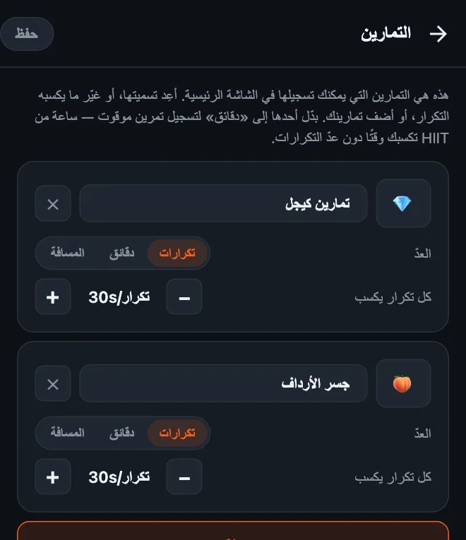
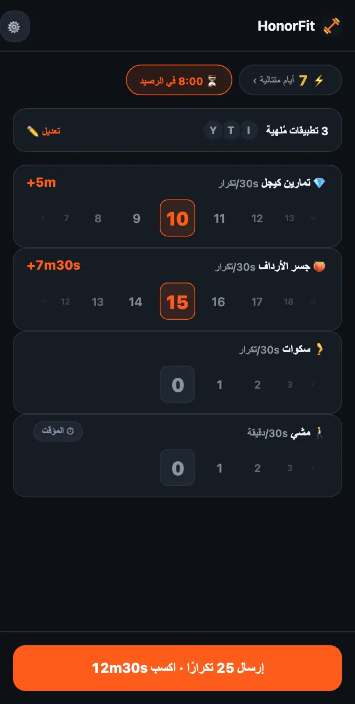

افتح هاتفك بتمارين كيجل
أهلًا بالجميع! صنعت HonorFit لأنني أردت أن تقف تمارين الضغط بيني وبين إنستغرام، دون أن أثبّت هاتفي لتعدّها الكاميرا (فعل ذلك في محطة بنزين لم يكن أفضل لحظاتي). تؤدي التكرارات، وتسجّلها بنفسك، فتُفتح تطبيقاتك.
لكن تمارين الضغط ليست للجميع. ومن أنسب التمارين لهذه الفكرة كلها تمرينان ليسا ضغطًا أصلًا: كيجل وجسر الأرداف. إليك السبب، وكيف تضبط ذلك.
لماذا يناسب كيجل نظام الشرف إلى هذا الحد
لا أحد يرى تمرين كيجل. لا الشخص الجالس بجانبك في الحافلة، ولا زملاؤك في العمل، وبالتأكيد لا كاميرا الهاتف. التطبيق الذي يعدّ التكرارات بالكاميرا لا يستطيع حرفيًا أن يعدّ هذه.
وHonorFit لا يحاول ذلك. يعمل بنظام الشرف (بالإنجليزية): تؤديها، وتدير العجلة إلى العدد الذي أديته، وانتهى. فيمكنك أن تكسب وقتك على تيك توك في اجتماع، أو في طابور البقالة، أو على الأريكة، دون أن يلاحظ أحد.
ويحل المشكلة التي يقولها الجميع عن كيجل: «أعرف أنه يجب أن أؤديها، لكني أنسى». إذا كنت تمد يدك إلى هاتفك مرات كثيرة في اليوم (لا أحكم عليك، أنا أيضًا)، فكل مرة منها صارت الآن تذكيرًا.
جسر الأرداف ليس خفيًا، لكنه سهل على الأرض أو حتى في السرير، ولا يحتاج إلى أي معدات، ويتماشى جيدًا مع كيجل.
كيف تضبطه
بدءًا من الإصدار 1.15.0، هذا مجاني: يمكنك إضافة حتى 3 تمارين خاصة بك دون Pro، وكيجل وجسر الأرداف كلاهما من الاقتراحات التي تُضاف بضغطة واحدة. (Pro، بـ 3 دولارات شهريًا أو 19.99 دولارًا مرة واحدة في الولايات المتحدة، يجعلها بلا حدود.) إليك الطريقة:
- اضغط على الترس في الشاشة الرئيسية، ثم على بطاقة التمارين.
- اضغط على اقتراح كيجل، ثم جسر الأرداف. لا حاجة للكتابة، ويأتيان برموزهما التعبيرية: 💎 لكيجل، ونعم، 🍑 للجسر.
- اضبط كل تكرار يمنحك بزرّي −/+ (اقتراحاتي في الأسفل).
- احذف ما لن تستخدمه بـ ✕ (العقلة، ربما؟)، واضغط حفظ.

الشرح الكامل للمحرر، بما فيه التمارين بالوقت، موجود في كيف تخصص تمارينك في HonorFit.
كم من وقت الشاشة يجب أن يمنحك كل تكرار؟
هذا ما أبدأ به:
| التمرين | كل تكرار يمنحك | مجموعة عادية تمنحك |
|---|---|---|
| 💎 كيجل | 30 ثانية | 10 تكرارات كيجل = 5 دقائق |
| 🍑 جسر الأرداف | 30 ثانية | 15 جسرًا = 7 دقائق و30 ثانية |
| 🚶 مشي (بالوقت) | 30 ثانية لكل دقيقة | مشية 20 دقيقة = 10 دقائق |
فمجموعة من 10 تكرارات كيجل مع 15 جسرًا تمنحك نحو 12 دقيقة ونصف. عدّل من هناك. إذا كان جمع الوقت سهلًا جدًا، فاخفض القيم. وإذا ضبطت نفسك تسجّل تكرارات لم تؤدّها، فالثمن مرتفع جدًا، فاخفضه.

شيء واحد عن كيجل: الأكثر ليس أفضل. مواقع صحية مثل MedlinePlus وCleveland Clinic تتحدث عمومًا عن مجموعات من نحو 10، بضع مرات في اليوم، وتقول إن المبالغة قد تترك العضلات مشدودة أكثر من اللازم. فأرجوك لا تحوّل هذا إلى 100 تكرار كيجل مقابل ساعة على يوتيوب! لهذا أعطيها قيمة معقولة لكل تكرار، وأترك جسر الأرداف أو القرفصاء أو المشي يغطي الأوقات الأطول.
الحركات الأساسية
أنا مطوّر تطبيقات، لست مدربًا ولا معالجًا فيزيائيًا، فهذه مجرد الفكرة العامة. الروابط أعلاه فيها التعليمات الصحيحة.
- كيجل: اشدد العضلات التي تستخدمها لحبس البول، واثبت بضع ثوانٍ، ثم أرخها تمامًا بضع ثوانٍ. هذا تكرار واحد. واصل التنفس، وحاول ألا تشد بطنك أو فخذيك أو أردافك. (إيقاف البول في منتصفه طريقة لتعرف العضلات مرة واحدة، لا شيء تتدرب عليه بانتظام.)
- جسر الأرداف: استلقِ على ظهرك مع ثني الركبتين والقدمين مسطحتين على الأرض. اشدد أردافك وارفع وركيك حتى يصنع جسمك خطًا مستقيمًا من الكتفين إلى الركبتين، توقف لحظة، ثم انزل ببطء. هذا تكرار واحد. يحب بعضهم إضافة تمرين كيجل في الأعلى.
إذا كنتِ حاملًا أو بعد الولادة، أو لديك ألم في الحوض، أو يؤلمك تمرين كيجل، فاستشر طبيبك أو معالجًا فيزيائيًا متخصصًا في قاع الحوض أولًا. يمكنهم أن يخبروك بما يناسب جسمك، وأحيانًا تكون الإجابة «ليس كيجل الآن»، ولا بأس بذلك. يمكنك ضبط HonorFit بما يوصون به بدلًا منه.
بعض النصائح
- احتفظ بثلاثة أو أربعة تمارين. شيء مثل كيجل، وجسر الأرداف، والقرفصاء، والمشي يغطي الجلوس والاستلقاء والخروج. لكل منها عجلته الخاصة، فالأقل أسهل.
- استخدم تمرينًا بالوقت للأيام التي تخرج فيها. حوّل تمرينًا إلى دقائق (أو اضغط على اقتراح المشي أو اليوغا) لتكسب المشية أو الحصة وقتًا أيضًا.
- الروتينات المحفوظة (Pro، فعّلها من الإعدادات) تتيح لك حفظ حتى 3 مجموعات من التكرارات، مثل «10 كيجل + 15 جسرًا»، وتطبيق إحداها بضغطة واحدة.
- احجب تطبيقًا أو اثنين، لا كل شيء. أيًا كان التطبيق الذي يلتهم أمسياتك.
وإذا لم يكن كيجل مناسبًا لك أيضًا، فقد كتبت عن بعض الخيارات الخفيفة التي تناسب المكتب أيضًا.
HonorFit Blocker حاجب تطبيقات مجاني لـ iPhone وAndroid. نظام الشرف، بلا كاميرا، ولا شيء يغادر هاتفك. كيجل وجسر الأرداف وحتى 3 تمارين خاصة مجانًا. ربما يعجب بعضكم!